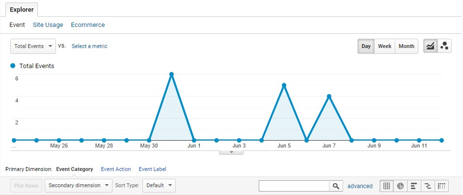
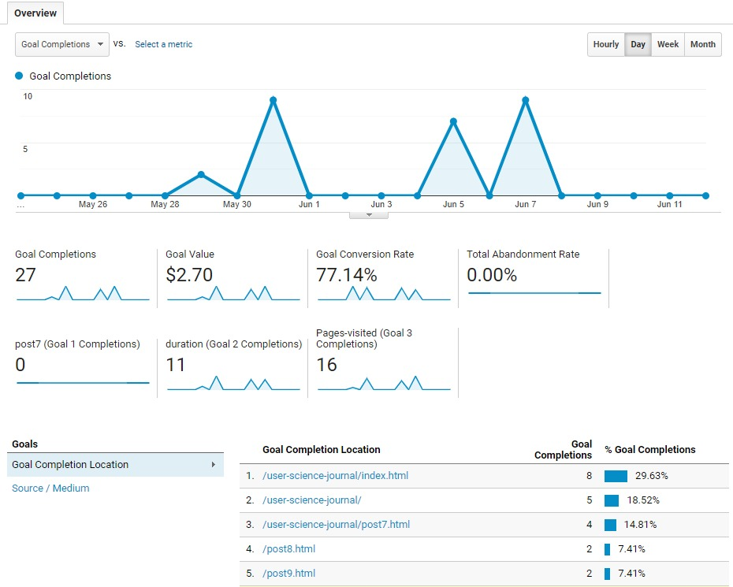

I spent the past several weeks learning about and experimenting with Google Analytics and today will circle back to the goals and events I set up a few weeks back.
Goals and Events
Google Analytics offers a few different options for setting up goals and events. Here's a look at the ones I configured for this site:
- Event: click on Google Analytics blog post from the homepage
- Pages/Screens per session: visit more than 1 page per session
- Duration: time spent greater than 30 seconds per session
Once goals are configured, Google Analytics creates metrics based on those goals.
Event
The first goal I set up was to track when users click on the Google Analytics blog post from the homepage. After fixing an error in my initial setup, I was pleased to see that event data was actually being collected.
 Google Analytics Click EventPages/Screens per session
The next goal configured was to track when users visit more than one page per session.
 Google Analytics Goal CompletionsAnalytics also allows you to assign a monetary value on each goal conversion, which I set at $0.10 on this one. I can see how this feature could be really useful in some industries.
Duration
The final goal I experimented with tracks when users spend more than 30 seconds on the site. The duration can be set to any number and be assigned a monetary value which I also set to $0.10.
Final Thoughts
I've only just hit the tip of the iceberg with Google Analytics but have learned so much over the past few weeks. It was really interesting to go through the process of setting up goals and see it all translate to real data. It's a powerful tool and one that I'll continue to experiment with in future.